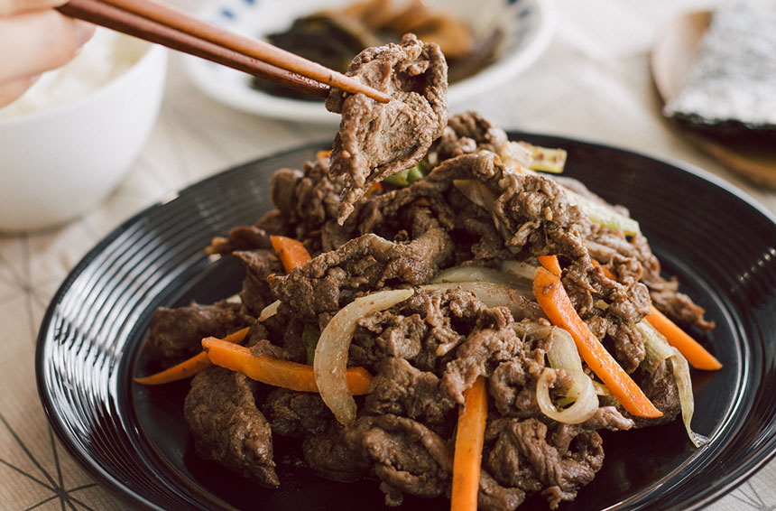

Ingredients for bulgogi, a Korean marinated beef dish
1 pound of beef sirloin or tenderloin, sliced thinly against the grain 1/2 cup of soy sauce,1/4 cup of brown sugar,2 tablespoons of sesame oil,1 tablespoon of rice vinegar,1 tablespoon of minced garlic,1 tablespoon of grated ginger,1/2 teaspoon of black pepper,1/4 cup of chopped scallions (green onions),1/4 cup of sliced onions,1/4 cup of grated Asian pear (or substitute with apple or kiwi)
1. In a large bowl, mix together soy sauce, brown sugar, sesame oil, rice vinegar, garlic, ginger, black pepper, scallions, onions, and grated Asian pear (or substitute) to make the marinade.
2. Add the thinly sliced beef to the bowl and stir to coat the meat evenly with the marinade. Cover the bowl with plastic wrap and let it marinate for at least 30 minutes or up to overnight in the refrigerator.
3. Heat a large skillet or grill pan over medium-high heat. Add the marinated beef to the hot pan and cook for about 2-3 minutes on each side until browned and slightly crispy. You may need to cook the beef in batches.
4. Serve hot with steamed rice and optional garnishes such as sesame seeds and sliced green onions.
Note: Bulgogi can also be cooked on a grill or broiled in the oven.